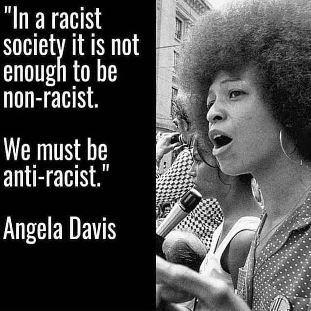

Inspired by the The Purple March on 2 September 1989
Purple is a new colour of protest. I encourage you to plant purple flowers in your gardens or even out on the pavements! Lavenders and Dwarf Irises will be great for this! Come on by Daniels' Daisies and we will give you these seedlings and bulbs for free so you can get planting and protesting!
We are also selling beautiful purple floral arrangements in support of this movement. This is my favourite arrangement.
I've created a Twitter account where I post about this @FlowerProtest89. DM me any flowers you plant and I will post them here! Let's spread the movement and have a place for discussion.
Macey Daniels is living in the late 80s but racial discrimination is still very prevalent today.
Today, Macey would be posting the following on this page.
This site has many petitions, resources, places to donate: #BlackLivesMatter
Please note: do not donate to change.org, this money does not go towards the cause. See the above link for better places to donate to!
